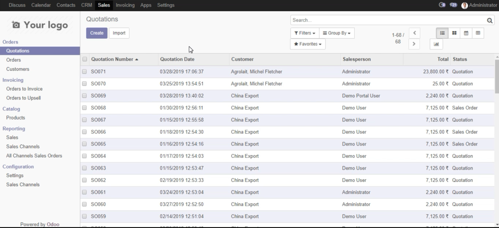
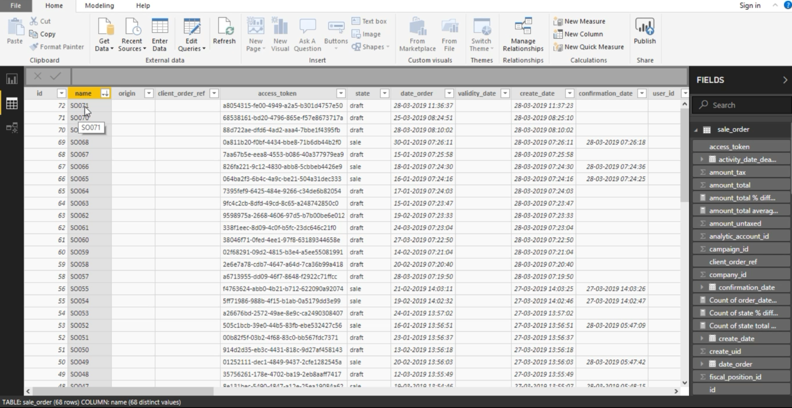
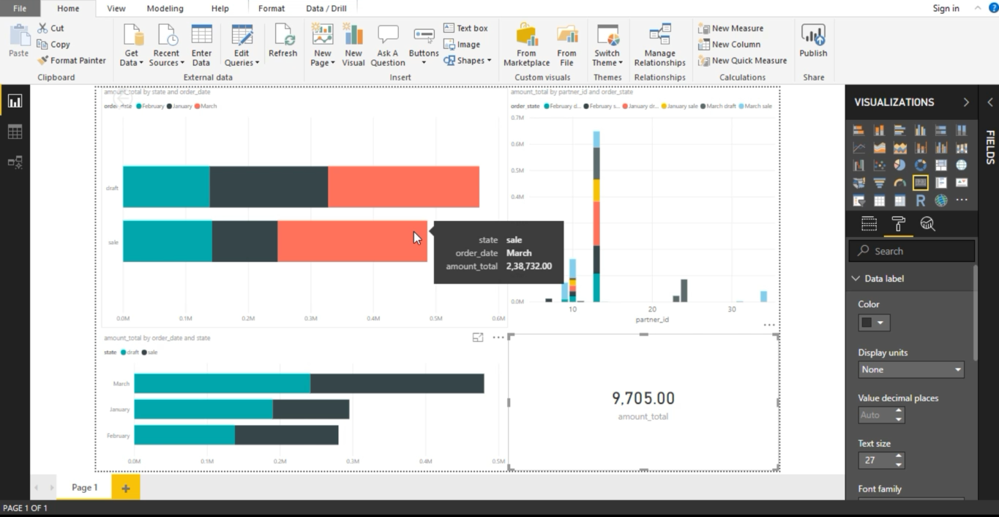
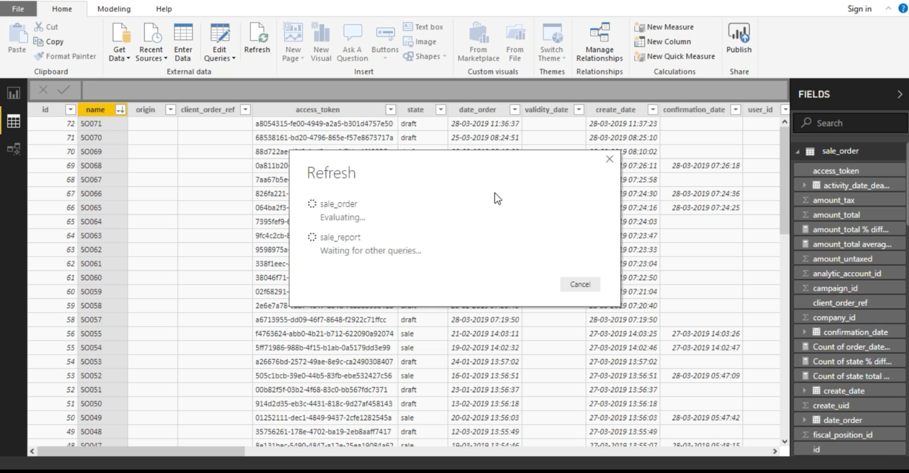
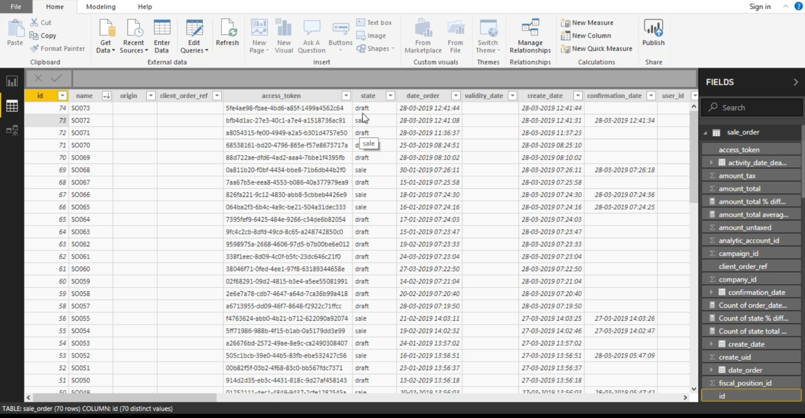

Odoo Power BI Integration
Power BI is a widely accepted business intelligence tool which helps businesses analyse their data in forms of illustrative graphs and charts. It enables one to make sense of data, get deeper insights into data and improvise on business strategies. If you are having an ERP system like Odoo to encapsulate all the business workflows in digital form, Power BI can really come in handy to analyse the historical data of Sales, CRM, Profit and Loss analysis, etc.
Generally, users try to connect Power BI to Odoo's Postgres directly which has its own shortcomings like, large data upload times, opening port of Postgres and thus, opening security loopholes, putting excessive load on same instance of Postgres, etc. Thus, we have come up with a way of replicating Odoo's database and connecting the same to Power BI so that you conveniently run Power BI on the data and at the same time not interfere with Odoo's Postgres instance. This ensures a fail-safe approach and also improved loading time of data on Power BI. For a demo check out the video
https://www.youtube.com/embed/35UrcrHPunY
For pricing and further queries feel free to get in touch at info@techneith.com
-
 Selecting the Module
Selecting the Moduleselecting the modules to be visualize
 -
Connecting with the Power BI
Connecting the module to the Power BI
 -
Visualize Data
Visualize your data in Power BI
 -
Refreshing Data
Refreshing or updating your data
 -
Confirming the data
Confirm your data
